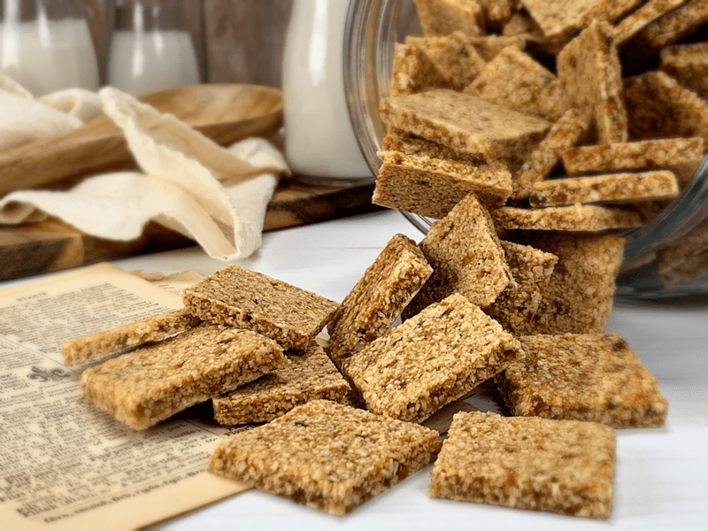

Apricot Banana Coconut Crackers
Crackers are a staple in our household. The minute they disappear, the requests start pouring in for more! I am not sure if you are aware of this, but did you know that a lot of raw crackers freeze beautifully?! This recipe, right here, right now, the very one that I am sharing with you is one of them. This cracker is super firm and crunchy (a true sign of a good cracker), they are slightly sweet and leave a scrumptious aftertaste in your mouth.

Making Foods from Scratch
I understand that making foods from scratch takes a bit more time to produce than buying processed crackers, but there are ways of getting around that. Batch food-prep! Select a day to create wonderful whole food recipes, double the quantity needed, enjoy a portion of it right away, and freeze the rest. Making foods in batches is an excellent way to work whether you live alone or whether you have a family of two, four, five, or ten (my prayers go out to you if you have ten, hehe).
Kitchen Timesavers
I make four batches of these crackers from the get-go. I place a small portion in an airtight container for snacking, and the rest goes into a freezer-safe container and popped into the freezer. You can take more out as needed. These crackers are pretty darn versatile. You can snack on them alone, make a bowl of cereal by breaking them up in small pieces, add nut milk and enjoy, crumble over your favorite ice cream, and so forth. Let the imagination of your taste buds fly free!
The Key to Cracker Success
Start with ripe bananas. They should be sporting a bright yellow jacket with brown polka dots (a timeless fashion trend). The dried fruit (Medjool dates and apricots) should be moist. If they are tough and dry, don’t skip the rehydrating part when making the recipe. Softer dried fruit blends much better. Feel free to use other types of dried fruit, but be mindful of the flavor change. I am often asked if you can use fresh fruit instead of dried fruit. For this cracker, I will advise against it. The dried fruit acts as a binder which locks in all the fantastic ingredients. Fresh fruit will be too watery, and the cracker won’t hold together.
When it comes to coconut, you will want to use shredded, dried, unsweetened coconut. If you have large flakes, break them down in the food processor into smaller pieces before adding them to the recipe. The coconut is used as a “flour” replacement and is the foundation of the cracker. Lastly, only add the stevia if you feel it needs it, and you should always taste test any batter before adding a sweetener. The ripeness of the fruit used and the desires of your taste buds will tell you what to do.
Well, I am going to stop there and let you get “crackering” in the kitchen. Please leave a comment below, and most of all… be blessed, nourished, and happy! I insist! blessings, amie sue
 Ingredients:
Ingredients:
Yields: 49 (2×2″) crackers
-
1 (140 g) large banana
-
8 large Medjool dates
-
1/4 cup water
-
1 cup (235 g) dried apricots, rehydrated
-
1/2 tsp Himalayan pink salt
-
1/2 tsp Ceylon ground cinnamon
-
10+ drops liquid NuNaturals stevia; to taste
-
4 cups shredded coconut
Preparation:
-
Blend the bananas, dates, water, dried apricots, salt, cinnamon, and stevia in a food processor, fitted with the “S” blade, until creamy.
- Remember – if the dried dates and apricots are tough, rehydrate them in enough warm water to soften them. It should only take about 10 minutes to rehydrate. Be sure to drain off the water before adding them to the recipe.
-
Add shredded coconut, processing till well-mixed.
-
Line the dehydrator tray with a non-stick teflex sheet.
-
Spread the batter from edge to edge.
-
Make sure that you spread it evenly so that it will dry evenly. I like to place plastic wrap on top and roll it out nice and compact with a rolling pin.
-
Wipe the edges clean.
-
Score the crackers into desired shapes and sizes. You can use a pizza cutter or a long metal ruler to create the score marks.
-
Dehydrate at 145 degrees (F) for 1 hour, then reduce to 115 degrees (F) and continue drying for up to 24 hours, until dry and crispy.
-
Snap apart and let cool before storing in an airtight bag/container.
-
They should last several weeks in the pantry or the freezer for 1-2 months. If they start to soften due to humidity, throw them back in the dehydrator to crisp up.
© AmieSue.com